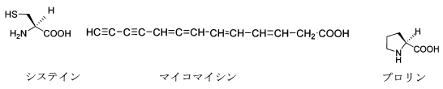

令和3年度 問7 有機化学及び燃料
立体化学に関する次の記述のうち、最も適切なものはどれか。

①
天然のアミノ酸システインはキラル中心がS配置を持っている。
②
天然産の抗生物質マイコマイシンは比旋光度［α］ D ＝-130を持つので不斉炭素を待つ。
③
分子が対称面を持てばキラルではない。
④
比旋光度の符号が（＋）をとると立体配置はR、（－）の場合はSとなる。
⑤
天然のアミノ酸プロリンはキラル中心がR配置を持っている。
正答
③ 分子が対称面を持てばキラルではない。
分子が対称面を持つ場合、その分子はアキラル（キラルではない）となります。
天然のアミノ酸はほとんどがL体です。偏光面を左に回転させるものをL体、右に回転させるものをD体と呼びます。また水素を紙面の後ろとした場合、NH2→COOH→Rの順で左回りに並んでいるのがL体、右回りがD体です。
1番の天然のアミノ酸であるL-システインはR配置です。
2番のマイコマイシンは、比旋光度が不斉炭素の存在を示唆するという点では正しいですが、あくまでキラルであるだけです。不斉炭素を持たなくてもキラルな化合物は存在します。マイコマイシンは軸不斉の化合物です。
4番の立体配置R/Sの配置と旋光度の符号（+/-）には直接的な関連はありません。
5番の天然アミノ酸であるL-プロリンはS配置を持ちます。